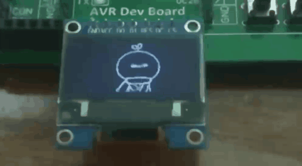

忙活了小半年，转眼间圣诞将至。这次我是没时间像以前那样，走一套方案、PCB、焊接、程序、调试的流程了，只好在现有的开发板上写代码了。
当我做出这个决定时，我的想法只是用EasyElectronics板在0.96寸OLED显示屏上画一颗爱心。但是写着写着我就觉得这个爱心难画——
我找不到一个含蓄之中带有三分活泼三分俏皮四分可爱的爱心形状；
相比以前做过的双色666光立方（也许以后会写吧），画个爱心实在入不了我的法眼。
于是怒改方案，把抠到一半的爱心图扔进了回收站。
但是画什么呢？静态的爱心不行，要画个会动的。什么会动呢？GIF！世上GIF千千万，选哪个呢？
我选了微信表情包“长草颜团子过年啦”第一行第二个“喜欢你”。
网上查阅了一下相关资料，发布的表情想要获得GIF是基本没戏的。只有暴力截屏了。
工具：手机。
操作：录屏。
并传输到电脑，此步骤省略。然后把每一帧挖出来。
工具：PotPlayer（也可以用其他软件）。
操作：对于每一帧（用D与F来逐帧播放），保存当前帧（png格式）。
一共获得19张不同的图片。我没找到可以批量裁剪图片的软件。
工具：画图。
操作：对于每一帧，裁剪出表情部分。
现在有了表情的每一帧（不过背景是灰色的），但在转换为OLED可以接受的格式之前，还需要先把彩色图片转换为黑白。
如果直接用画图保存为单色位图，中间的爱心会消失。
工具：Word 2019（不太老的版本应该都行吧）。
操作：
对于每一帧：
插入图片；
图片格式->颜色->重新着色->黑白50%；
另存为PDF；
在Word中保存图片，输出的是原始图片。换个工具。
工具：Adobe Acrobat Pro DC。
操作：对于每一帧，保存图片为bmp。
现在有了黑白图片，但尺寸是手机上显示的大小。
工具：画图（没错又是画图，万能的画图）。
操作：对于每一帧：
另存为单色位图；
如果图中有爱心，先补全边框（如果边框不完整），再填充颜色；
重新调整大小，高度64（长度自动70）；
调整一些看得不顺眼的像素。
工具：PCtoLCD2002（网上很容易找到）。
操作：对于每一帧：
打开图片；
生成字模（右下角；格式自己捣鼓吧）；
保存字模；
把txt文件的内容复制到代码中。
一共19张图，最后一张复制一遍，有定格的效果。
先放链接，把Release\heart.hex烧写进单片机就可以运行啦！
程序用C语言写成，分成4个文件：
data.h，保存图片数据（想想把声明和定义都放在.h文件里会出什么问题？）；
driver.h，OLED与定时器相关函数声明；
driver.c，SPI发送、OLED指令、定时器中断等实现；
main.c，定时器回调函数与程序入口。
大致思路是在main中初始化，在定时器中断中读取并显示图片。
图片为70*64像素，每一像素用一个bit存储，一张图片需要560字节，20张就是11KB，内存里放不下。<avr/pgmspace.h>提供了把数据放在程序空间（program space，即flash）的宏PROGMEM，以及函数memcpy_P，与memcpy类似，不过是从flash中拷贝到内存中。
由于进入与退出中断需要push与pop所有使用的寄存器，相比12.5MHz的SPI与3us的间隔（否则OLED不能正常工作，不知道为什么）所花的时间相当，在中断中发送数据没有意义，所以数据是阻塞发送的。
为了优雅，驱动库与客户之间用回调函数解耦：客户定义函数display，在main的初始化中把display的指针作为参数，注册回调；驱动库在中断中通过函数指针调用display函数（函数指针可以不写取地址和解引用）。
实现细节就写这么多吧，其余的看代码和datasheet即可。
最后放一张效果图：
